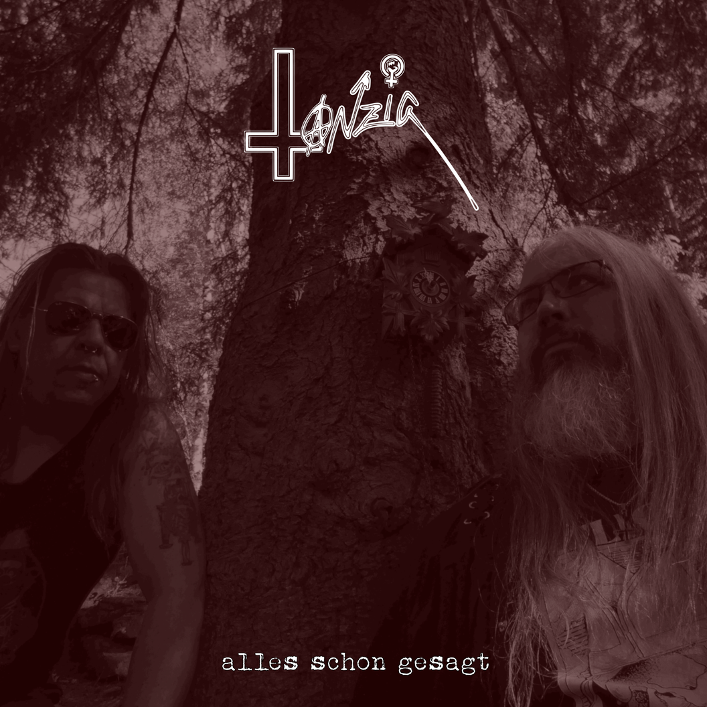
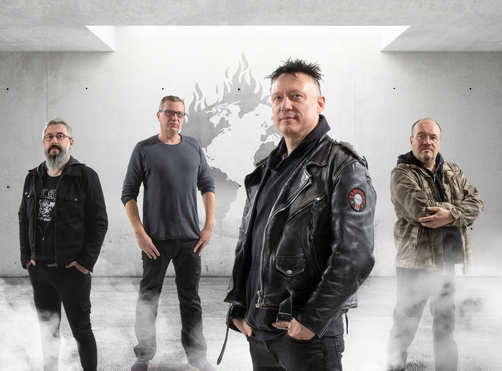

News
RandaleFUNK-Ticker
Der Krach sortiert sich spaeter. Erstmal kommt er rein: Songs, Videos, Releases, Konzerte, Festivals und kurze Hinweise aus dem Maschinenraum.
The Casualties kommen zum Back To Future

Das Back To Future hat den letzten Platzhalter auf dem 2026er-Flyer aufgeloest: The Casualties kommen nach Glaubitz. Damit steht fuer den 16., 17. und 18. Juli 2026 noch mehr Punkrock-Wellness im Kalender.
Noch mit dabei sind Alarmsignal. Wahrscheinlich als moeglichst billige Verstaerkung fuer The Casualties.
Die eigentliche Frage bleibt natuerlich: Wie kann eine so geile Band auf so ein herrlich schrottiges Festival gehen? Vermutlich genau deshalb.
Becher Wasser in den Nacken, Becher Bier in die Hand, "Ugly Bastards" im Kopf - der Sommer macht schon wieder ungesunde Geraeusche.
Zum FestivalTanzig zeigen Cover zu "Alles schon gesagt"

Qualitaetspvnkrock seit 2013! TANZIG - die schoenste Boyband Thueringens - veroeffentlichen das Cover zum neuen Album "Alles schon gesagt". Sieht erfreulich nach Death-Metal-Waldandacht aus.
Endlich nicht wieder dieser typische Punk-Rotz, bei dem jemand Rot, Schwarz und drei kaputte Buchstaben zusammenklebt.
Nach "Fresse!" wirkt das alles fast verdachtig beruhigend. Ob das Album dem Punk kurz eine Pause gibt und zum gemuetlichen Death Metal wechselt, wissen wir aktuell noch nicht.
Live steht laut Tanzig-Terminen der 26.09.2026 fuer "13 Jahre TANZIG" im Kalender - noch in Planung, aber der Krach hat schon mal einen Bleistift gefunden.
Zur BandDoedelhaie steuern zwei Festivalrunden an


Die Doedelhaie kuendigen auf Facebook zwei Open-Air-Stopps fuer den Sommer an: am 03. und 04.07. beim "Kein Bock auf Nazis"-Festival in Kusel und am 10. und 11.07. beim Stoerfaktor Festival in Zwickau.
Zwischen Love A, Wick Bambix, Waumiau und reichlich weiterer Bande duerfte der Festivalstaub nicht lange unbenutzt herumliegen.
Originalpost ansehenAlarmsignal kuendigen "Fresse auf!" an
Die Band kuendigt auf Facebook an, dass am 24.06. ueber Aggropunk die neue Single "Fresse auf!" erscheint. Verpackt ist das Ganze gewohnt dezent zwischen Boulevard-Parodie und gepflegtem Mittelfinger.
Gehoert haben wir den Song noch nicht - aber der Titel klingt schon mal nicht nach Sitzkreis.
Originalpost ansehenFoo Fighters spielen No Use For A Name in Oslo
Laut 23punk haben die Foo Fighters in Oslo "Invincible" von No Use For A Name gecovert. Der Song steht auf "Making Friends" und hat durch Chris Shiflett, der frueher bei No Use For A Name spielte, einen direkten Draht zur Bandgeschichte.
Zwei Lieblingsbaustellen auf einmal - da wackelt in der Burg kurz der Kaffeebecher.
Originalpost ansehenEuren Krach hier reinwerfen
Neue Single? Frisches Video? Konzert? Festival? Album? Oder irgendetwas anderes, das Laerm macht?
Der RandaleFUNK-Ticker lebt nicht von Presseagenturen, sondern von Bands, Veranstaltern, DIY-Projekten und Menschen, die lieber etwas machen als darueber zu reden.
Wenn ihr etwas ankuendigen moechtet, schickt die Infos einfach rueber. Wir koennen nicht versprechen, alles zu veroeffentlichen - aber wir schauen es uns an.
DIY hilft DIY.
KRACH MELDEN